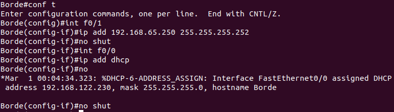
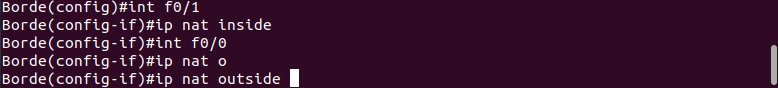
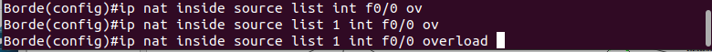
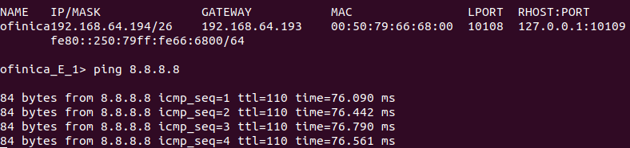
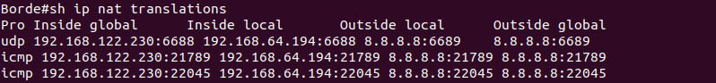

Universidad Nacional de Ingeniería
Facultad de Ciencias
Escuela Profesional de Ciencias de la Computación
Administración de Redes
Proyecto Capstone: Internetworking
Cada sede de la empresa contrata un ISP para el acceso a internet.
Se usa Nat para traducir las direcciones privadas a públicas.
En el router de acceso a internet (borde) se le asigna una ip dinámica (dhcp) a la interfaz que se conecta con el exterior.
Se indica qué interfaz está conectada a la red privada (inside) y cual está conectada a la red pública (outside).
Creamos una lista de control de acceso (ACL) para controlar qué hosts pueden salir al exterior.
Habilitamos la NAT con sobrecarga (overload) en la interfaz de salida.
Realizamos una consulta a internet por un hosts
Comprobamos la tabla de traducciones Nat
